Based on our observations, we noted that participants of presentations can’t express the same non-verbal cues as in in-person presentations. For instance, often in video presentations, raised hands go unnoticed. In general, participants struggle to express information that would otherwise be expressed through body language or facial expression. This limits the way presenters and participants can engage with each other and especially dampens dialogue. Most software for video conferencing does not have many features to encourage other forms of communication and participation in presentation, and those that do have these features buried behind menus and drop downs.
Our goal is to create a system that will help participants and presenters interact more casually during video-conferencing. By providing the ability for participants to “emote” during presentations, then aggregate and display this information to everyone, we hope to increase participation. This feature will support more non-disruptive forms of communication for participants and provide presenters with easy to interpret statistics of participant reactions.
10 plus 10 session
Here are the ideas that were generated in our first 10 plus 10 brainstorming session. First, we didn’t constrain the technology feasibility and the layout of our possible designs, rather we explored all possible design options.
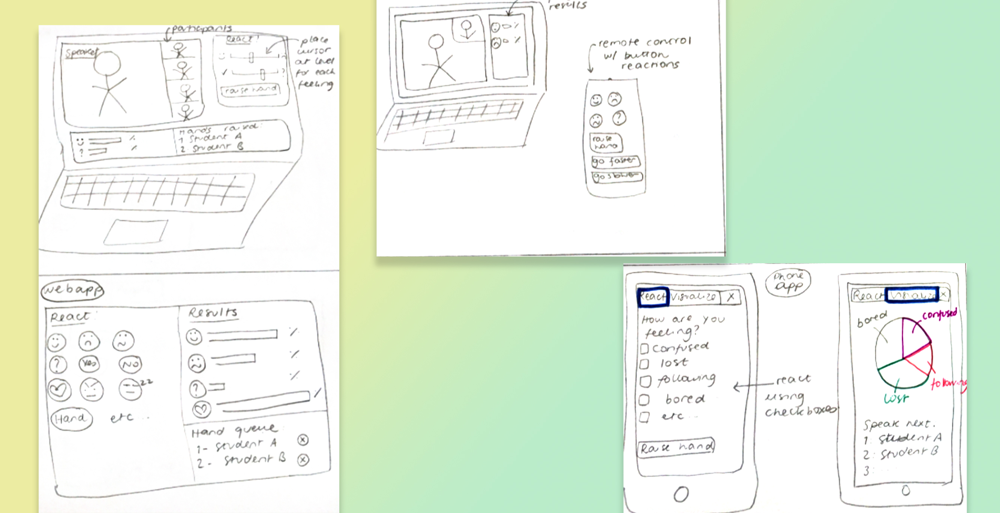
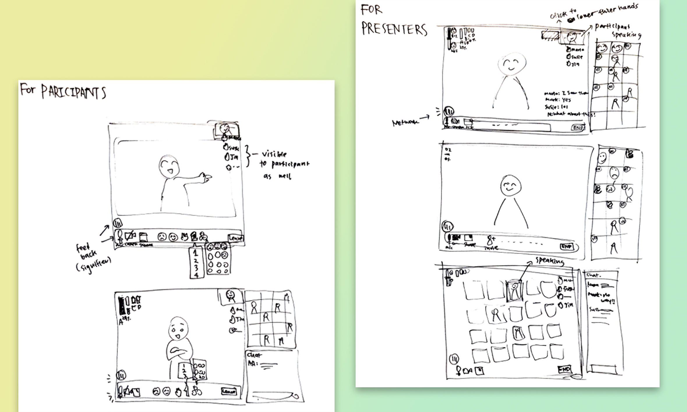
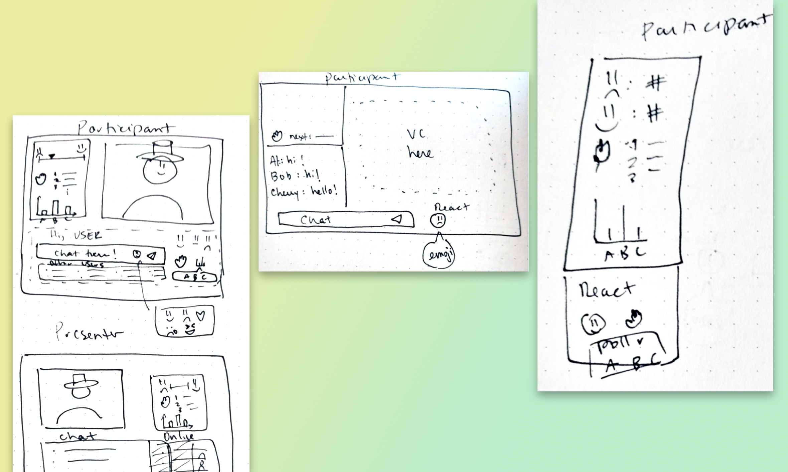
After this session, we settled on a single column interface which doesn’t incorporate video conferencing tools. We wanted our system to be used by anyone, no matter their choice of video-conferencing platform. From that, we generated many ideas about the style and format of the interface, namely where key features like raising hand or emoting would go. Here are the ideas we came up with:
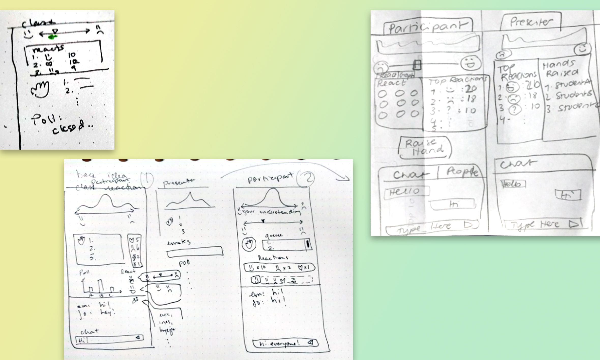
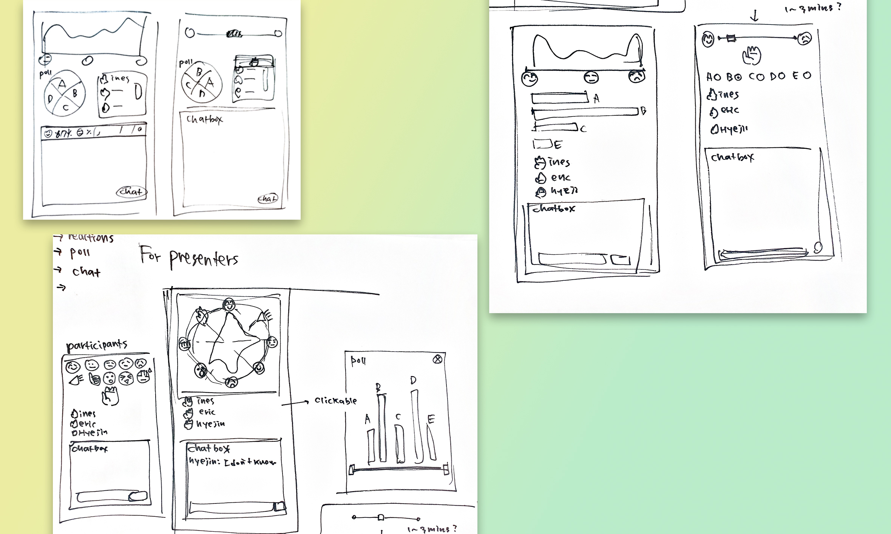
2. Prototypes
We bounced our ideas off each other with sketches and conducted
usability testing with our paper prototypes. For the usability
testing, we ran the wizard of Oz testing as below:
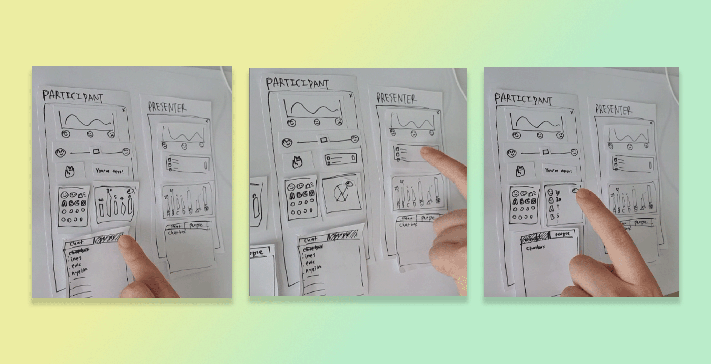
The Prototypes
Here are the three initial prototypes we landed on. The only changes at this point was the layout of the features and panels in our program.
Prototype A
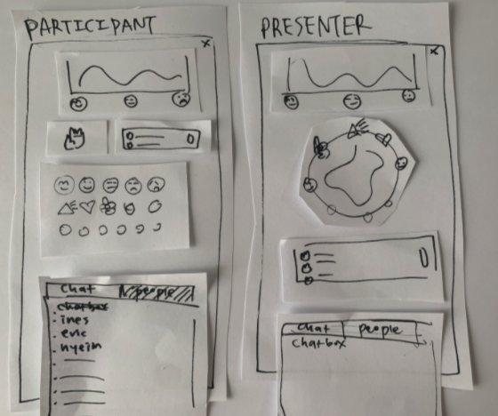
Prototype B
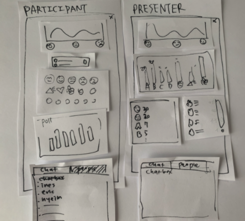
Prototype C
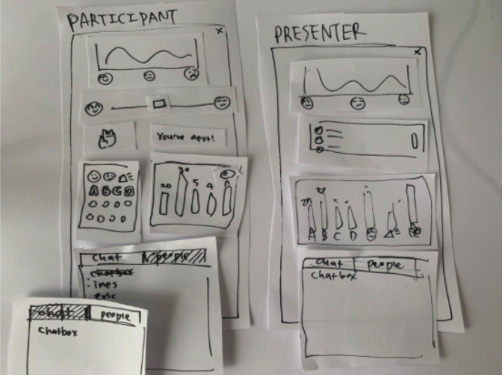
Design decisions
Having worked on our sketches and prototypes, we made several design
decisions.
Not to incorporate videoconferencing in our website.
In order to make our system accessible to everyone, we decided not to integrate it into any existing video-conferencing platform. Rather, we opted to create a stand-alone web app that can be opened in a separate window and positioned next to the video conferencing software. That way, our system can be used by anyone, no matter their choice of video-conferencing platform. This will also help us in terms of feasibility as we will not have to deal with complicated code bases and integrating our features with existing platforms like Zoom.
Vertical display
We chose a vertical display as it is easy to organize our
features from top to bottom while sharing the screen real
estate with a video conferencing software. This also
facilitates displaying on tablets or phones if users decide
to use those instead of having two different windows open.
Integrate chat feature
At first, we were debating whether we should create a chat
feature in our app, or rely on the user video conferencing
platform’s chat feature. We ultimately decided to add a chat
feature to our application. Having chat functionality in our
app means that users don’t need to continually go back to
the video conferencing software they use. Having a chat
feature rounds out our application and provides more of a
“one stop” app that meets more use cases.
Toggle display for aggregate emoji reacts
We were unsure if we should show aggregated emoji responses
as a raw number beside the respective emoji, or as a bar
graph histogram of emoji responses. Instead of choosing
between these two views, we decided to give users the option
to toggle between both views (number score and bar graph).
This way users can adjust the display of the app in a way
that works best for them.
Express participant level of understanding on a 2D line +
visualize it in a distribution
When it comes to the “level of understanding” feature that
aggregates how participants self report their understanding
of the presentation content, we chose to have users input
their level of understanding as a point on a spectrum and
display the class aggregate as a distribution. For
participants, articulating their understanding on a spectrum
opposed to discrete emoji allows for more precise expression
on the part of the participant. Displaying the aggregated
level of understanding, we opted for a distribution as this
will make it easier for the presenter to draw conclusions
from the data, as he will be able to see in real-time how
the ‘level of understanding’ trend for the audience moves
when they make further explanations or present new topics.
Display participant position in questions queue
Regarding the “hand raising” queue populated by participants
raising their hand, we chose to not show participants the
names of the other participants in the queue. Instead, we
decided to simply display the number of participants with
their hand up, and if the participant raised their hand,
what position they are in the queue. We did this to
declutter the UI. We thought the position in the queue would
be helpful as students can anticipate when they will be
called on to ask their question to the presenter and provide
a fair (first come, first serve) order to questions.
Polling with emoji
Most polling features in video conferencing software opens a
new popup window. We decided to have an integrated poll
feature embedded directly in the interface. We chose this
because our observation findings showed us pop up windows
can be distracting and annoying to users.
We also decided to reuse the “reactions” panel that displays
popular participant reactions to display polling answers.
This means students vote with an emoji (ex 🅰, 🅱) and class
aggregates are displayed in the reactions panel. This is
better than a dedicated polling panel for two reasons: it
saves space, and allows participants to express “I don’t
know” or “thinking” emojis while answering. These latter
emoji reactions are particularly valuable to a presenter.
Working flow for participants
Express "“I don’t understand”
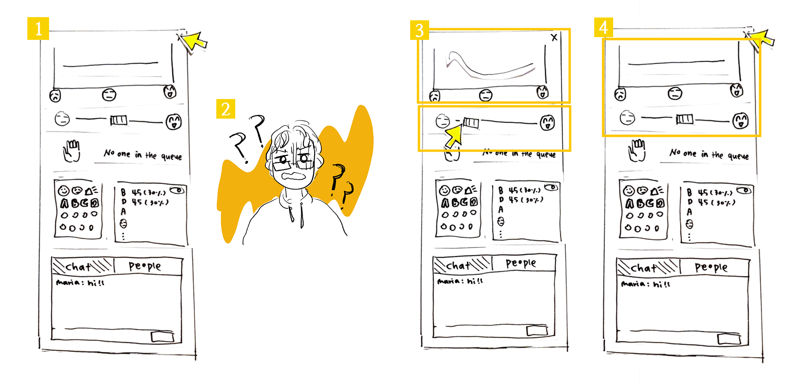
Participants want to speak
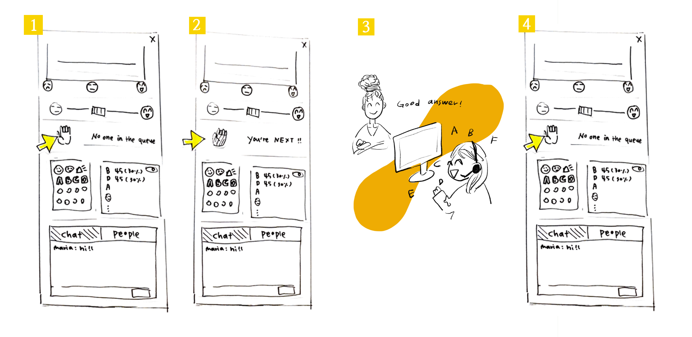
Emote reactions
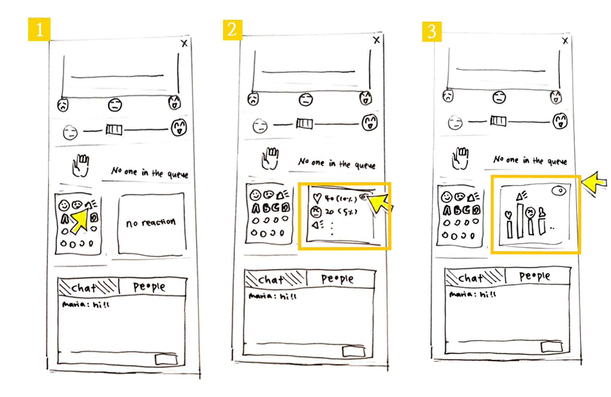
See other participant’s reactions and answer poll questions
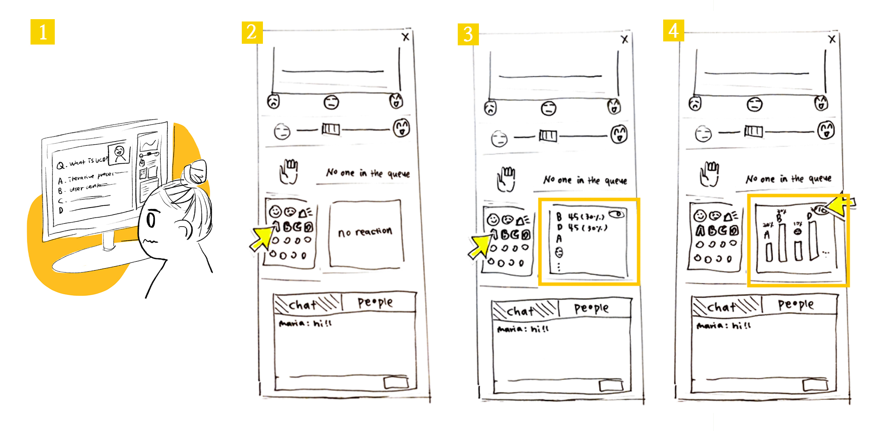
See the participant list
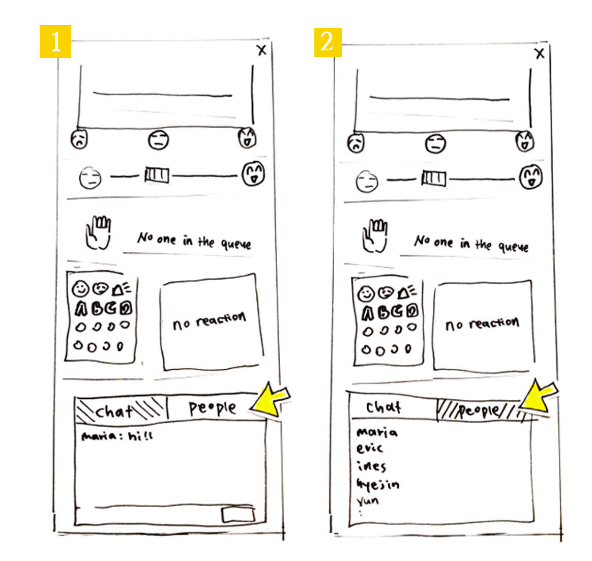
Working flow for Presenters
Ask multiple-choice question to participants and view polling results
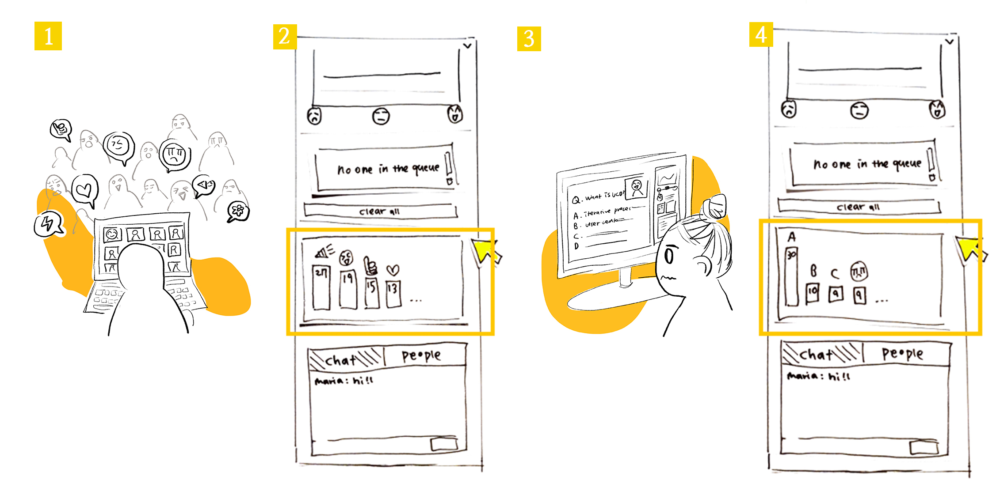
Notice the rasied hands and lower them
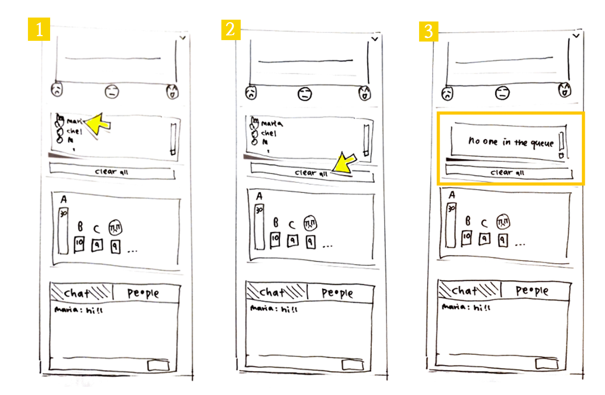
Check to see if participants are following along
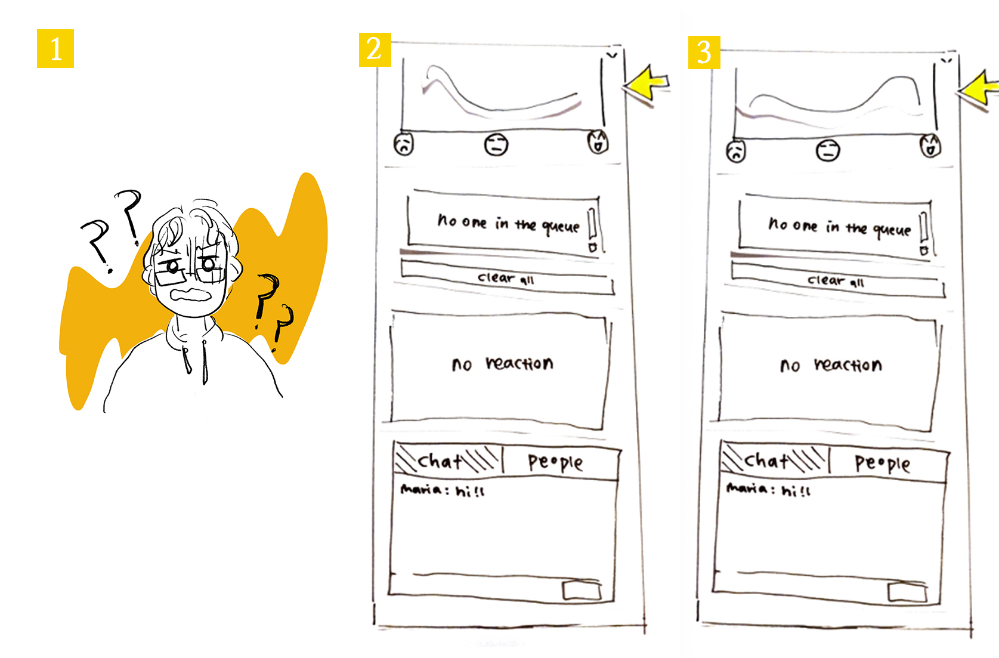
3. Usability goals & benchmark tasks
Usability Goals
Learnability: the system should be easily learned by new users
Rationale: We want our system to be accessible to anyone using videoconferencing softwares, so users should be able to understand the functionalities offered within minutes of using it.
Ease of use: the system should be easy to interact with
Rationale: One of the main drawbacks of current video-conferencing tools like Zoom is that they provide an extensive range of features (raising hands, emoji reactions, polling, chat) but they are buried behind different menus and are hard to visualize at the same time (need of switching between windows/layouts…). We aim to offer a system where all interactions can be made in real time and without the need of switching to different windows/apps.
Efficiency: Software is not distracting and supports live emotional expression
Users should be able to react in real-time and view trends with minimal disruptions to focus.
Rationale: Our system is aimed to be used during presentations so it must not be overly disruptive or distracting to the presenter and/or participants. It should also provide support for students to express their emotional state in real-time with a variety of features without disrupting the presentation. If features are hard to access, users waste their time and can lose focus on the presentation.
Effectiveness: Software increases engagement
The user should feel more comfortable to express themselves and feel more a part of the presentation.
Rationale: Users can emote and see the class aggregate emotes while remaining anonymous. This will help students (especially shy or anxious students) a less stressful way to engage in the class. This kind of emotional investment helps support participant engagement and overall investment in the presentation.
Satisfaction: Users should be satisfied when using the system.
Rationale: The goal of this project is to improve existing video-conferencing. Users should be satisfied with the system and feel it as a valuable add-on to the existing video-conferencing tools.
Please note that the last usability goals will be assessed in the post-test questionnaire.
The benchmark tasks
Tasks for the participant
Task
Related Usability goals
Let the presenter know you’re following
1,2,3,4
Send a message in the chat
1,2,4
Add yourself to the question queue
1,2,3,4
Remove yourself from the question queue
1,2,3
Answer to polling question
1,2,3,4
View polling results on bar chart
1,2,3
Check which students are connected
1,2
Give the presenter a love-reaction
1,2,3,4
Tasks for the presenter
Task
Related Usability goals
Assess how students are following along
1,2,3,4
Check which reaction has the highest count
1,2,3,4
Look up who is next in the question queue and delete them from the queue
Subject A is a student at HEC. She works at Desjardins and uses video conferencing daily for her work and school. She feels comfortable using video conferencing tools and participates in her online class during lectures when asked to.
Task
Reached?
Time taken
Observations
Let presenter know you’re following
N
2 secs
Participant used an unintended feature
First the participant tried to type the message in a chat box. And then they clicked one of the emojis. The participant did not use the “emotion bar” here.
Send a message on the chat
Y
2 secs
.
Add yourself in the question queue
Y
2 secs
.
Remove yourself from the question queue
Y
2 secs
.
Answer the poll
Y
2 secs
.
View the polling result
Y
2 secs
The participant knew where to check this right away.
However, when asked to check the bar graph version of the results: user paused to think about it (~5sec). She first tried to emote, unsuccessfully, then she noticed the toggle button and clicked on it. When she figured out what that button was doing, it took her 2 secs to switch back and forth between views. She had learned the feature.
Check who are connected
N
10 secs
User got confused, took a long time to reach task
The user spent time looking for the feature. Incorrectly tried to emote first, then tried the chat. The participant seems confused. Finally clicked the “people” button after ten seconds.
The subject B is a developer. He uses the video conferencing software 4 to 6 times a week for work. He delivers a presentation during the code reviews, daily meetings and bug fixing sessions. He is very comfortable using videoconferencing tools. Participants of his presentations engage during the talk only when they have a question. His participants use webcam, voice chat and text chat, but do not raise their hand and or use emotes (ex. “yes” “no” “clap” etc. in Zoom)
Task
Reached?
Time taken
Observations
Assess how students are following along upon looking at the student understanding graph
N
10 secs
Graph was initially hard to interpret
When the graph was flat, the subject was confused and didn’t seem to know how to interpret it. He intendedly clicked on the emoji to gain more context. Once the graph changed however, he understood how to interpret the graph.
Checks the emote with the highest count
Y
5 secs
.
Sees who the next participant is in the question queue
Y
2 secs
.
Remove yourself from the question queue
Y
2 secs
.
Deletes person who just asked a question
N
Never done
We forgot the button in our prototype
Ask a multiple choice question and check the answer with the highest count
Y
2 secs
.
Check people who is connected
N
2 secs
Participant used an unintended feature
User knew that he had to look at the chat but did not click on the ‘People’ button. He suggested that he would send a message on the chat and wait for responses in order to accomplish this task
The post test Interview
Subject B stated that they would like to see the number of people expressing “the level of understanding”. They like the bar graph of emoji results with numbers displayed. The subject B likes that the distribution of the level of understanding is real-time as they can always check if participants are following their presentation. Overall, it is good that all results are anonymous. The subject believes that this software is especially useful for introverted participants.
Future improvements
A few improvements became clear to us upon the data analysis:
Clearer labelling on level of understanding
Both the participant and presenter had issues initially using and interpreting the level of understanding graph. This is understandable, given the lack of titles, subtitles, and labelling around the graph. To mitigate confusing, we hope to include a title, x and y axis labels, and other text around the graph.
{kind=link}